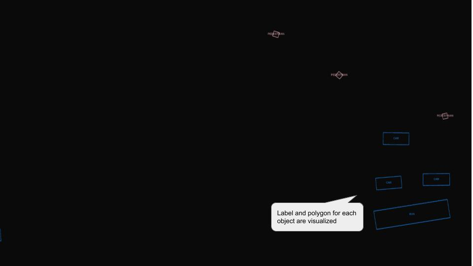
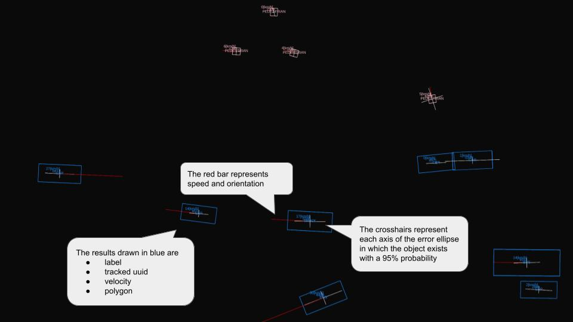
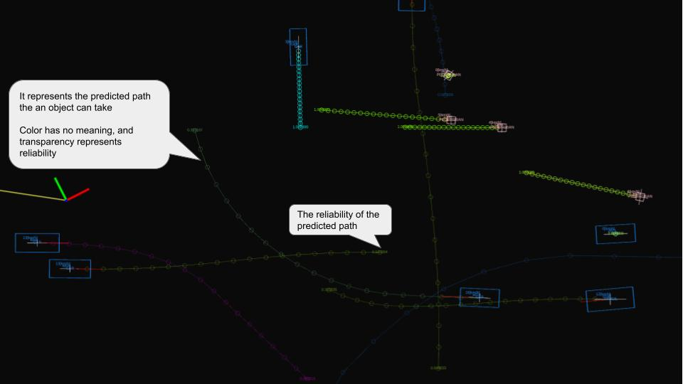
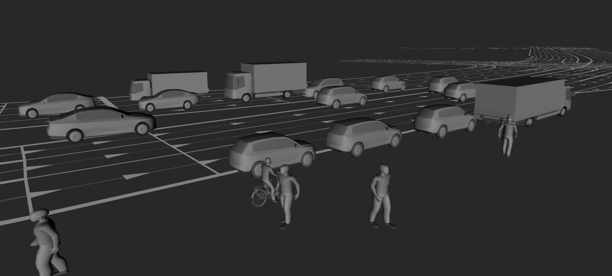
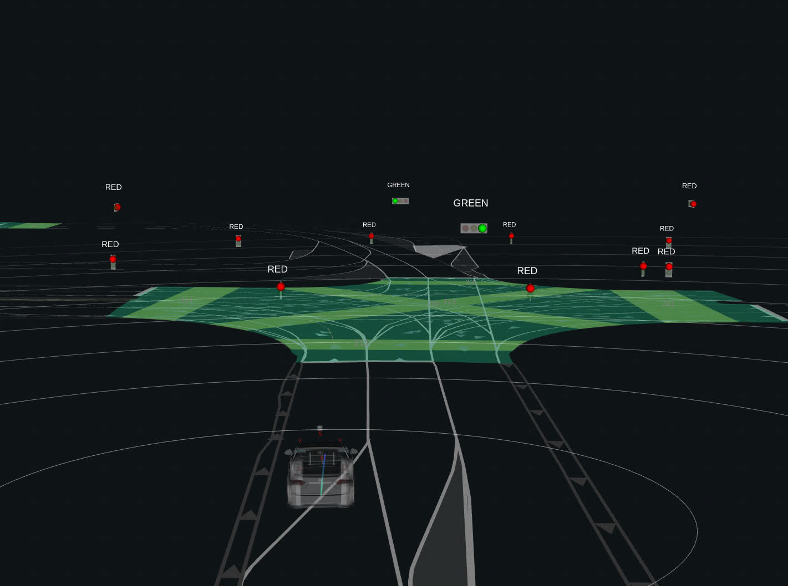

autoware_perception_rviz_plugin#
Purpose#
It is an rviz plugin for visualizing the result from perception module. This package is based on the implementation of the rviz plugin developed by Autoware.Auto.
See Autoware.Auto design documentation for the original design philosophy. [1]
Input Types / Visualization Results#
DetectedObjects#
Input Types#
| Name | Type | Description |
|---|---|---|
autoware_perception_msgs::msg::DetectedObjects |
detection result array |
Visualization Result#

Customizable Features#
These options are shared by the DetectedObjects, TrackedObjects and PredictedObjects displays.
Color: a single color applied to every class by default.Per Class Color: when enabled, each class is drawn with its own color from the per-class color groups nested under this toggle, instead of the singleColorabove. When disabled (the default), the singleColoris used for all classes. Changes take effect on the next received message. Per-class colors do not affect predicted-path colors, which encode per-object identity from the UUID.Alpha: opacity shared by all object colors (both the singleColorand the per-class colors).
TrackedObjects#
Input Types#
| Name | Type | Description |
|---|---|---|
autoware_perception_msgs::msg::TrackedObjects |
tracking result array |
Visualization Result#
Overwrite tracking results with detection results.

PredictedObjects#
Input Types#
| Name | Type | Description |
|---|---|---|
autoware_perception_msgs::msg::PredictedObjects |
prediction result array |
Visualization Result#
Overwrite prediction results with tracking results.

Mesh Visualization#
For all object types mentioned above it is possible to additionally visualize a mesh file for each object based on its class. For this the mesh namespace can be activated in RViz. For cars the visualization dynamically switches between a sedan and SUV model, based on the ratio between height and length.
Visualization Result#
Visualization of only the mesh files for different vehicle types, pedestrians and cyclists.

Customizable Features#
- Set visualization offset for predicted objects (n steps in to the future)
- Visualize vehicle lights (brake, left indicator, right indicator)
TrafficLight#
Input Types#
| Name | Type | Description |
|---|---|---|
| Lanelet Map | autoware_map_msgs::msg::LaneletMapBin |
Map data containing traffic light positions |
| Traffic Light State | autoware_perception_msgs::msg::TrafficLightGroupArray |
Traffic light recognition results |
Visualization Result#
The plugin visualizes traffic light states in two ways:
- Text display showing the current state (RED, AMBER, GREEN, directional arrows)
- 3D spheres representing the light bulbs, colored according to their state

Customizable Features#
- Text position offset (X, Y, Z)
- Text font size and color
- Text prefix
- Show/hide text display
- Show/hide bulb visualization
- Timeout for stale data
- Topic names for both input types
Resources / License#
The 3D models in the 'meshes' directory are provided by Sebastian Preuße (LinkedIn, sebastianpreusse.com) and are licensed under Creative Commons Attribution-ShareAlike 4.0 International License.